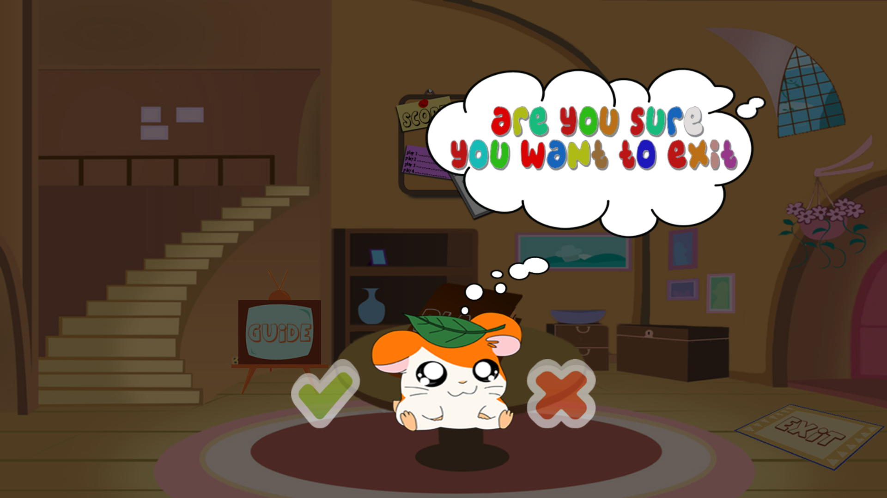
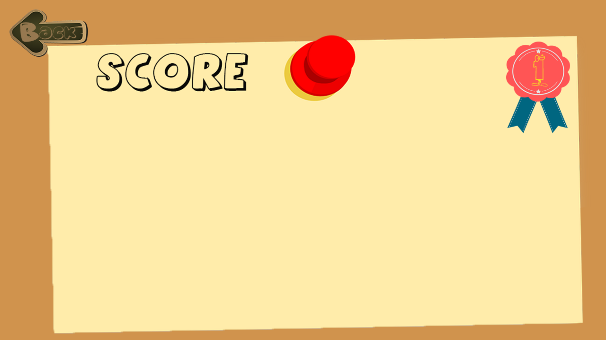
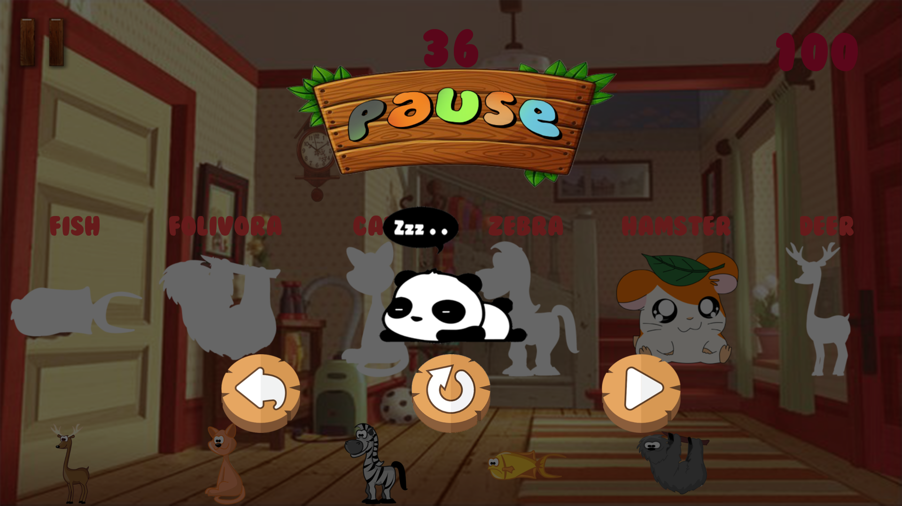
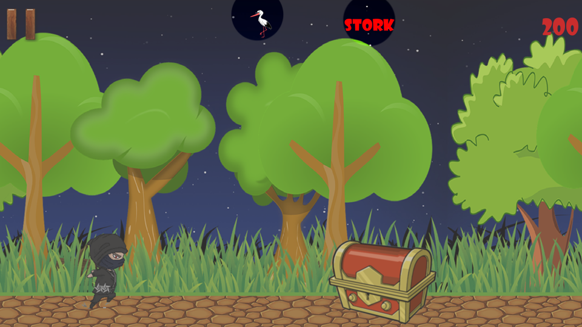
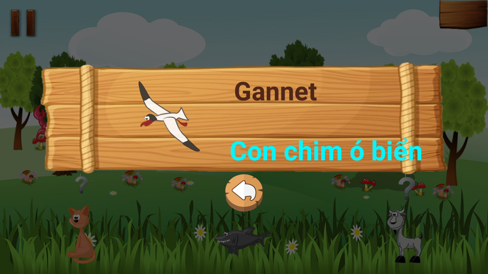
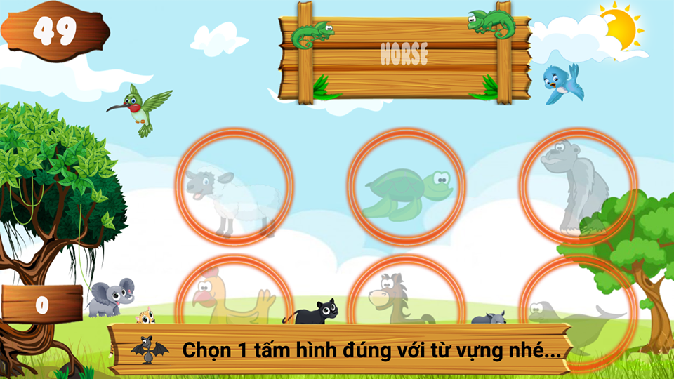

Hướng Dẫn Chơi Game
1) Menu: Nhấp nút Play để chơi, Exit để thoát và Score để xem điểm
*Main Menu
*Dialog Exit

*Score

2) Topic: nhấp mũi tên bên trái và phải để chọn chủ đề, nhấp vào chủ đề để chọn mức độ chơi
3) Có 3 mức chơi: học từ, học nghe viết, luyện tập tổng hợp

4) Hộp Thoại:
*Khi bạn muốn tạm dừng game thì hãy nhấn nút để tạm dừng game
*Hộp thoại tạm dừng game

*Khi bạn thua thì game sẽ kết thúc và hiện hộp thoại Game Over
*Khi bạn chiến thắng thì game sẽ kết thúc và hiện hộp thoại Win Game
5) Các màn chơi game :
5.1 Cấp độ học từ bao gồm các game:
5.1.1 Game ghép hình :
*Chọn hình tương ứng ô trống, có gợi ý chữ để trẻ học từ và khi trẻ chọn đúng sẽ có phát âm chữ tương ứng với chữ gợi ý
*Chi chọn hình đúng bạn sẽ được điểm số tương ứng

*Thời gian dùng để giới hạn thời gian chơi game của bạn
*Khi còn 10 giây cuối sẽ có hiệu ứng cảnh báo sắp hết giờ nên đừng ngạc nhiên nhé

5.1.2 Ninja học từ :
*Bạn sẽ trở thành 1 ninja rong ruổi khắp nơi và truy tìm những hòm kho báu
*Chú ý khi gặp những hòm báu vật hãy nhấp vào hòm để phá hủy hòm và tìm hiểu những bí ẩn bên trong nhé
*Khi phá được hòm sẽ xuất hiện hộp thoại hiển thị con vật bên trong hòm, muốn biết tên của nó là gì thì hãy nhấp vào nó nhé
*Khi hộp thoại biến mất thì hình ảnh cùng với tên con vật sẽ hiện lên trên và bạn có thể nhấp vào chúng để nghe lại từ

5.1.3 Game chọn đối tượng :
*Hãy nhấp vào những vật trên màn hình để xem từ tiếng anh của chúng là gì
*Khi nhấp con vật sẽ hiện ra hộp thoại gồm tên tiếng anh và tên tiếng việt của con vật đồng thời có phát âm tên tiếng anh giúp cho bạn dễ nhớ hơn

*Sau khi chọn xong 1 vật thì dấu chấm hỏi sẽ mất và thay vào đó là tên tiếng anh của vật bạn vừa học
5.2 Cấp độ học nghe viết bao gồm các game:
5.2.1 Ninja học viết từ :
*Bạn sẽ trở lại hóa thân thành 1 ninja rong ruổi khắp nơi và truy tìm những hòm kho báu
*Chú ý khi gặp những hòm báu vật hãy nhấp vào hòm để phá hủy hòm và tìm hiểu những bí ẩn bên trong nhé
*Khi bạn phá vỡ hòm sẽ hiện ra hộp thoại nhập từ:
5.2.2 Bubble Game :
*Màn hình sẽ xuất hiện 6 bong bóng chứa các vật và bạn có nhiệm vụ chọn 1 vật sau đó trả lời đúng để giải thoát cho chúng

*Khi trả lời đúng con vật sẽ được giải thoát
5.2.3 Chọn hình ảnh tương ứng :
*Chọn 1 hình ảnh tương ứng với từ trên bảng

*Khi chọn sai sẽ hiện lên thông báo bạn chỉ được chọn 1 lần nữa thôi

=5.3 Cấp độ luyện tập bao gồm các game:
5.3.1 Market Game :
*Chọn 1 hình ảnh tương ứng với từ trên giỏ và kéo nó vào giỏ
*Bảng level sẽ hiển thị cấp độ và độ khó bạn đang chơi, và 1 level có 3 lượt chơi
*Market Game có thời gian và khi bạn chọn từ đúng càng nhanh thì sẽ được điểm càng cao
*Khi chọn sai sẽ hiện lên thông báo và cho bạn chọn 1 lần nữa cùng gợi ý 3 tấm hình gần đúng, nếu chọn sai sẽ kết thúc game
*Khi chọn đúng sẽ hiện lên hộp thoại vật bạn vừa chọn và tên tiếng anh lẫn tiếng việt cùng với phát âm tiếng anh
5.3.2 Writing practice game :
*Xuất hiện 1 khung cảnh có 6 vật thể
*Nhấp chọn 1 vật thể và điền tên vào nó bảng
*Sau khi nhập xong thi hãy nhấn nút để trả lời
*Khi chọn sai sẽ hiện lên gợi ý, nếu gõ sai kết quả lần nữa sẽ thua
5.3.3 Writing practice game :
*Xuất hiện 1 khung cảnh có 6 vật thể và bạn sẽ phải nghe từ phát âm sau đó chọn vật thể tương ứng
*Loa sẽ phát âm lại từ khi bạn nhấp vào loa
*Khi bạn chọn sai sẽ hiện lên thông báo sai rồi và cảnh báo bạn chỉ được chọn 1 lần nữa